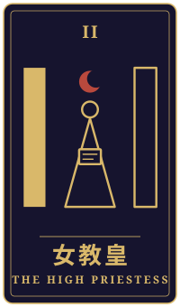
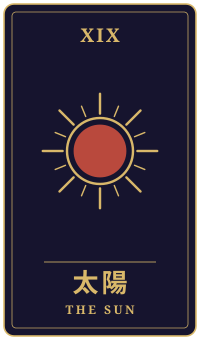
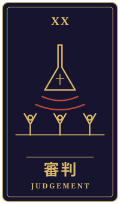

地上の目
物語の手前に、ひとつの相談がありました。三枚のタロットをめぐるやりとりを、聞こえたままに書き留めています。
持ち込まれた相談
毎年秋、父のチームの気球を車で追いかける係をしてきました。地上から見上げる気球が、私は昔から好きでした。去年、父の気球が着陸で危ない思いをして、父は降りると決めました。今年は別の人の気球を手伝っていますが、チームのみんなは、私が操縦の資格を取って父の気球を引き継ぐものだと思っています。期待に応えたい気持ちはあります。でも本当は、空に上がるのが少し怖い。追いかける側でいたいと言ったら、父をがっかりさせる気がして、まだ誰にも言えていません。このまま流れに乗るべきか、自分の気持ちを伝えるべきか、迷っています。
タロットの読み解き

過去
女教皇・正位置
女教皇の正位置が過去に現れていますね。直感と静けさ、そして内に向かう知性を示す札です。気球を地上から見上げ、追いかけてきた時間は、あなたが空という場所を静かに見つめてきた時間だったのかもしれません。

現在
太陽・正位置
現在に出ているのは太陽の正位置です。成功や喜び、そして健やかさを表す札で、今のあなたは、誰かの期待に応えようとする力を持っている状態とも読めます。手伝いを続けていることも、チームへの誠実さの表れでしょう。ただ、太陽は明るさを示す一方で、無理に光を浴び続けなくてもよいことも教えてくれます。

未来
審判・正位置
未来には審判の正位置が出ています。復活や再起、覚悟を示す札です。ここでの覚悟は、必ずしも空へ上がることを意味しません。自分の本当の思いを認め、それを言葉にする覚悟、という読み方もできます。
最後に
カードから見ると、今いちばん大切なのは、怖さを感じている自分の気持ちを否定せず、まず静かに認めてあげることかもしれません。そのうえで、父を喜ばせるかどうかより、正直な思いを伝えることが、結果的に父とチームへの一番の誠実さになる、という見方もできます。
ただ、資格や引き継ぎの話は、安全や実際の進め方に関わる大切な決断ですから、チームの方や、必要であれば航空の専門家とも相談しながら、ゆっくり進めてくださいね。まずは信頼できる一人に、そっと気持ちを話してみることから始めてみてはどうでしょう。
帰り際の問い呼ばれているものに、どう応えるのか。
読み解きは、タロット占い「月夜のアルカナ」が、この相談と引かれた三枚から返したものです。小説は同じ三枚を、別の角度から描いています。相談者は物語のための架空の人物です。相談文・読み解き・短編本文は、いずれも生成AIを使って制作しています。
物語に戻る